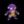

| - | Character | Speed | - | - | Score | - |
|---|---|---|---|---|---|---|
| Aria | 5:11.79 | 2nd | 4818 | 549th | ||
| Bard | 2:49.64 | 8th | 5559 | 3661st | ||
| Bolt | 3:33.54 | 11th | 4639 | 160th | ||
| Cadence | 5:16.31 | 7th | 6681 | 3174th | ||
| Diamond | 3:55.61 | 8th | 3449 | 4069th | ||
| Dorian | 3:16.54 | WR | 2836 | 749th | ||
| Dove | 2:44.25 | 11th | 221 | 4692nd | ||
| Eli | 4:59.97 | 9th | 3638 | 917th | ||
| Mary | 5:16.68 | 10th | 3806 | 608th | ||
| Melody | 4:46.52 | 3rd | 5713 | 1063rd | ||
| Monk | 5:41.50 | 2nd | 8775 | 54th | ||
| Nocturna | 5:55.23 | 4th | - | - | ||
|  | Tempo | 4:09.26 | 6th | 3588 | 1720th | |
| Coda | - | - | 1026 | 114th | ||
| Story | 27:55.24 | 7th | 13987 | 585th | ||
| 9char | 58:08.89 | 5th | 21936 | 201st | ||
| 13char | 1:21:15.46 | WR | 34074 | 102nd |
| - | Character | HrdSp | NRSp | RndSp | PhsSp | MysSp | - | HrdSc | NRSc | RndSc | PhsSc | MysSc | DLess |
|---|---|---|---|---|---|---|---|---|---|---|---|---|---|
| Aria | - | - | - | - | - | - | - | - | - | - | 3-4-151st | ||
| Bard | - | 4:11.476th | 9:07.0647th | - | 8:50.1419th | 2895871st | 3639325th | 25921993rd | - | 17551123rd | 1-1-1461st | ||
| Bolt | - | - | - | - | - | 40239th | - | - | - | - | 5-1-152nd | ||
| Cadence | - | - | 10:03.5716th | - | - | - | 3438969th | 27651974th | - | - | - | ||
| Diamond | - | - | - | - | - | - | - | - | - | - | - | ||
| Dorian | - | - | - | - | - | - | 95523rd | 13881st | - | - | - | ||
| Dove | - | - | - | - | - | - | - | - | - | - | - | ||
| Eli | - | - | - | - | - | - | - | - | - | - | 3-1-135th | ||
| Mary | - | - | - | - | - | - | - | - | - | - | - | ||
| Melody | - | - | - | 4:46.84WR | - | - | - | - | 2703285th | - | 1-1-1149th | ||
| Monk | - | - | - | 5:54.343rd | - | - | - | - | 323050th | - | 5-5-313th | ||
| Nocturna | 13:31.7330th | - | - | - | - | 33723334th | - | - | - | - | - | ||
| Tempo | - | - | - | - | - | - | - | - | - | - | - | ||
| Coda | - | - | - | - | - | - | - | - | 51557th | - | - |
Last Updated:2021/05/14 23:15